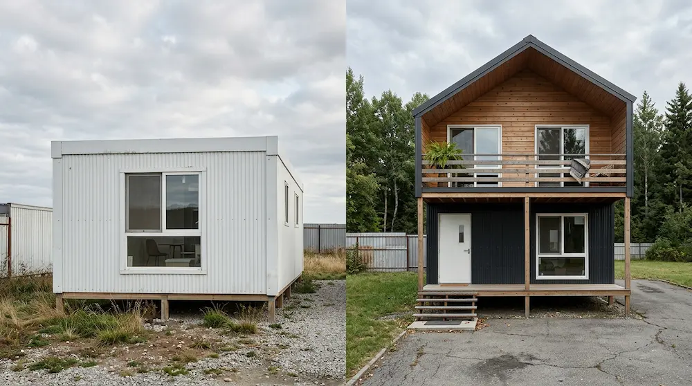

Te explicamos paso a paso cómo se forma el precio REAL de tu casa prefabricada en Canarias.
1. Precios por m²
En 2026, los precios de casas prefabricadas en Canarias van de 900-1.800€/m² "llave en mano" (casa completamente terminada y habitable, lista para mudarte sin obras adicionales).
| Calidad | Precio m² | Ejemplo 100m² | Incluye |
|---|---|---|---|
| Básica | 900-1.200€ | 95.000-120.000€ | Madera, baño/vivienda simple |
| Media | 1.200-1.500€ | 125.000-150.000€ | Hormigón, 2 baños, cocina equipada |
| Premium | 1.500-1.800€ | 160.000-185.000€ | SIP, domótica, piscina opcional |
¿Te parece muy caro? Si quieres descubrir las ayudas disponibles en Canarias Consulta nuestra guía completa.

2. Qué incluye
"Llave en mano" = casa lista para MUDARTE. El precio se divide en:
- Estructura (60% precio): madera/hormigón prefabricado fábrica
- Montaje (15%): 15-45 días en tu terreno
- Cimentación (10%): losa/placa según suelo (rústico necesita más)
- Acabados (10%): puertas, ventanas, pintura anti-UV
- Instalaciones (5%): fontanería, electricidad, certificado energético
NO incluye: terreno, licencia ayuntamiento (2-3% extra), conexiones luz/agua.
3. Cálculo IGIC y extras
IGIC Canarias = 7% sobre TOTAL (no IVA 21% peninsular).
Ejemplo casa 100m² media (130.000€ base):
Base materiales+montaje: 130.000€ + IGIC 7%: +9.100€ + Cimentación: +8.000€ + Licencias: +3.000€ TOTAL FINAL: 150.100€
Extras comunes (+10-25%):
- Piscina: 12.000€
- Placas solares: 6.000€
- Aire acondicionado: 4.000€
- Porche cerrado: 8.000€
Te ayudamos a calcularlo sin compromiso
4. Transporte interislas
El TALÓN DE AQUILES de precios Canarias (15-25% extra):
| Isla | % Sobre base | Grúa especial | Notas |
|---|---|---|---|
| Gran Canaria | Base | No | Puerto Las Palmas |
| Tenerife | +12% | Sí | Santa Cruz + aduana |
| Lanzarote/Fuerteventura | +18% | Sí | Barcos especiales |
| La Palma/La Gomera | +25% | Sí | Helicóptero piezas grandes |
Ejemplo: Casa 120m² Fuerteventura = +22.000€ transporte vs Gran Canaria.
5. Comparativa calidades
- Básica (900€/m²): Madera pino, 1 baño, cocina sin electrodomésticos. Ideal segunda residencia.
- Media (1.300€/m²): Hormigón celular, 2 baños, electrodomésticos, suelos gres. Vivienda habitual.
- Premium (1.700€/m²): SIP, domótica, sanitarios suspendidos, climalización, aislamiento R-40.
Caso real: Pareja en Maspalomas mejoró de básica (98.000€) a media (138.000€), invirtiendo 40.000€ extra que les ha dado 10 años sin una sola reforma.
Te puedes ahorrar mucho dinero en comparación a una casa tradicional, si quieres saber más consulta nuestra guía completa.
6. Errores precios
Errores que te cuestan 20-40% MÁS:
- ✅ Evita: Pedir precio peninsular (sin IGIC ni transporte)
- ✅ Evita: Solo "estructura" sin llave en mano (+30% acabados)
- ✅ Evita: Olvidar cimentación suelo rústico (+15k€)
- ✅ Evita: No calcular interislas (+25% La Palma)
- ✅ Evita: Básica para vivienda habitual (reformas año 2)
7. Guías y FAQs
Explora más temas:
- Permisos y normativa en Canarias
- Materiales según el clima de tu isla
- Casa prefabricada vs tradicional
- Ayudas para tu proyecto
Preguntas Frecuentes
Básica 95-120k€, media 125-150k€, premium 160-185k€. Todo llave en mano + IGIC 7%.
Transporte barco 15-25% + IGIC 7% + cimentación vientos/sísmica. Precio final similar calidad.
No. Licencia 2-3% proyecto arquitecto (3-5k€ extra). Nosotros tramitamos.
12.000€ prefabricada 8x4m. Incluye filtración y depuradora. Sola ya sube valor 25k€.